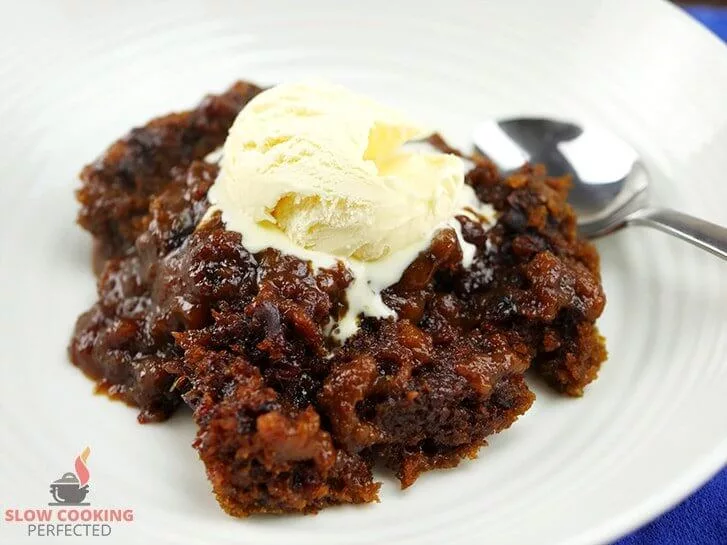

Return
Salmon Teriyaki

This sweet slow cooker sticky date pudding is the perfect way to finish off a busy day. It is relatively easy to get cooking and tastes amazing.
Ingredients
- 250 g (8.8 oz) pitted dates, chopped
- 1 tsp baking soda
- 300 ml (10.1 fl oz) boiling water
- 100 g (3.5 oz) unsalted butter, softened
- 1 tsp vanilla essence
- 200 g (7.1 oz) brown sugar
- 2 eggs at room temperature
- 375 g (13.2 oz) self-rising flour
Sauce
- 150 g (5.3 oz) brown sugar
- 80 g (2.8 oz) golden syrup
- 750 ml (25.4 fl oz) boiling water
Method
- In a bowl, combine the dates with the baking soda and boiling water.
- In a different bowl, add the butter, sugar, vanilla and beat together until light and fluffy.
- Beat in the eggs one by one until well combined.
- Add the flour, dates (including the water), and mix until well combined.
- Lightly grease a slow cooker and pour in the sticky date pudding mix.
- On top of the pudding mix, scatter the brown sugar and golden syrup.
- Slowly pour in the boiling water.
- Cook on low for 4 hours.
- Serve & Enjoy.